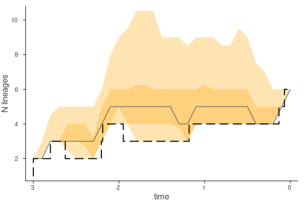
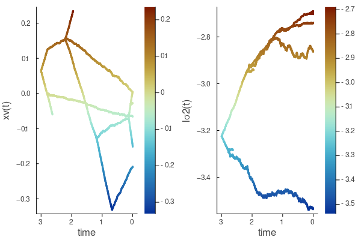

Quick runs
You can quickly run any of the models in Tapestree.jl by following these minimal tutorials under mostly default parameters. To conduct thorough analyses, add options, use additional models, or several other capabilities (such as plotting) please read the Manual.
INSANE models using Bayesian Data augmentation (DA)
INSANE models output two files, a .log file that saves the standard MCMC parameters trace (can be read in by Tracer link) and a .txt file with the data augmented (DA) trees that can be read using iread() function. These two vectors (named below r and tv consistently for the parameter Matrix and the DA tree vector) are also returned by the function and kept in memory on the active Julia sessions. Moreover, the DA tree vector can be exported as an annotated nexus file using write_nexus(), allowing interoperability with other phylogenetic software.
Reading a newick tree
To read a tree in newick format you can just use
tree = read_newick("<tree file directory in newick format>")You can plot this tree by loading the Plots package and then doing
plot(tree)
Diversification (birth-death) models
Constant Birth-Death (CBD):
using Tapestree
tree = read_newick("<tree file directory in newick format>")
r, tv = insane_cbd(tree,
niter = 100_000,
nthin = 1_000,
ofile = "<out files directory>")The tv is a vector of all data augmented (DA) posterior trees. You can plot one of them doing
plot(tv[1])
You can discern the data augmented lineages by using showda = true
plot(tv[1], showda = true, linewidth = 3.0)
You can estimate and plot the diversity through time (DTT) every 0.1 time units by doing
plot(ltt(tv), 0.1)Birth-Death Diffusion (BDD):
using Tapestree
tree = read_newick("<tree file directory in newick format>")
r, tv = insane_gbmbd(tree,
niter = 100_000,
nthin = 1_000,
ofile = "<out files directory>")For no extinction use insane_gbmpb, for constant extinction use insane_gbmce, for constant turnover use insane_gbmct.
To estimate the posterior average speciation and extinction rates along the tree, we first remove the DA lineages
tv0 = remove_unsampled(tv)And then estimate the average
tm = imean(tv0)You can plot the tree "painted" by the latent speciation rates
plot(tm, birth)
Or the extinction rates
plot(tm, death)
We can also plot, say, the cross-lineage average speciation rate
plot(birth, 0.1, tv)
One can save this tree vector as an annotated nexus file that can be read by other phylogenetic software
write_nexus(tv, tree, "<output directory>")Constant Fossilized Birth-Death (CFBD):
using Tapestree
tree = read_newick("<tree file directory in newick format>", true)
r, tv = insane_cfbd(tree,
niter = 100_000,
nthin = 1_000,
ofile = "<out files directory>")For the following I used here the 6 tip fossil tree tree_6.tre in the data directory of Tapestree.
One can plot the input tree
plot(tree)
And compare it to one randomly chosen posterior data augmented trees
plot(rand(tv), showda = true, linewidth = 3)
Tapestree allows for piece-wise constant rates of preservation that change at times specified by the user ("episodic FBD"). For example, if the input is a tree with, say, $tree height = 3.0$ (the depth of the tree), we could want to specify that the rates of fossilization are different between, say, the periods $(3.0, 2.1)$, $(2.1,0.9)$, and $(0.9,0)$.
For this it suffices to include a (Float64) vector of times where the fossilization rate, $\psi$, is allowed to change in the ψ_epoch argument
r, tv = insane_cfbd(tree,
niter = 100_000,
nthin = 1_000,
ψ_epoch = [2.1, 0.9],
ofile = "<out files directory>")Finally, it might be desirable to incorporate fossil occurrences of species in the empirical tree that were not included. For instance, we might have a species represented only by one fossil occurrence as a tip in the tree, but we have information of some other fossil occurrences of this species. Including this information will better inform the fossilization rate.
To continue the example above, suppose that we have $2$, $1$ and $3$ additional fossil occurrences for species represented in our tree, for the three periods. To include this information, we simply specify it in the f_epoch argument:
r, tv = insane_cfbd(tree,
niter = 100_000,
nthin = 1_000,
ψ_epoch = [2.1, 0.9],
f_epoch = [2, 1, 3],
ofile = "<out files directory>")Let's look at the diversity through time, and add also the LTT from the empirical tree for comparison
plot(ltt(tv), 0.1)
plot!(ltt(tree), linewidth = 2.0, linestyle = :dash)
Fossilized Birth-Death Diffusion (FBDD):
using Tapestree
tree = read_newick("<tree file directory in newick format>", true)
r, tv = insane_gbmfbd(tree,
niter = 100_000,
nthin = 1_000,
ofile = "<out files directory>")For the following I used here the 6 tip fossil tree tree_6.tre in the data directory of Tapestree.
To have piece-wise constant preservation rates and add additional fossil occurrences, use the same arguments introduced just above in Constant fossilized birth-death process (CFBD).
We can plot the average speciation and extinction, after removing unsampled (DA) lineages and estimating the average using
tv0 = remove_unsampled(tv)
tm = imean(tv0)
p0 = plot(tm, birth)
p1 = plot(tm, death)
plot(p0, p1, linewidth = 3.0)As with other birth-death diffusion models, we can plot the cross-lineage average speciation rate and extinction rates
p0 = plot(birth, 0.1, tv)
p1 = plot(death, 0.1, tv)
plot(p0, p1)
Diffused Brownian motion (DBM) model
using Tapestree, DelimitedFiles
tree = read_newick("<tree file directory in newick format>", true)
tdat = readdlm("<trait file>")
xavg = Dict{String, Float64}(tdat[i,1] => tdat[i,2] for i in 1:size(tdat,1))
r, tv = insane_dbm(tree,
xavg,
niter = 100_000,
nthin = 1_000,
ofile = "<out files directory>")Here the <trait file> would be a simple .txt file with species names in the first column and continuous trait values in the second. For this example I used the tree_6.tre tree and trait data in trait.txt in the data directory of Tapestree.
We can plot one random posterior trait history on the tree
plot(rand(tv), xv, linewidth = 3.0)
Or we can plot the phenogram using
plot(xv, rand(tv), linewidth = 3.0)We can estimate the average posterior for the traits and rates
tm = imean(tv)and plot the average paths for trait and rate evolution
p0 = plot(xv, tm, linewidth = 3.0)
p1 = plot(lσ2, tm, linewidth = 3.0)
plot(p0, p1)
To add trait uncertainty around the average values (assumed to be Normally distributed), one needs another Dictionary, just as with xavg above, but having each species point to the standard deviation to set the argument xs. For instance, if we have another simple .txt file with species names in the first column and standard deviations in the second:
tvar = readdlm("<trait file>")
xstd = Dict{String, Float64}(tdat[i,1] => tdat[i,2] for i in 1:size(tdat,1))
r, tv = insane_dbm(tree,
xavg,
xs = xstd,
niter = 100_000,
nthin = 1_000,
ofile = "<out files directory>")